|
Jeonghwa Heo I am an integrated M.S./Ph.D. student in the Interdisciplinary Program in Artificial Intelligence at Seoul National University. I am advised by Prof. H. Jin Kim at LARR. My research interests include computer vision, visual navigation, and generative models. |
{kind=link}
ResearchI am interested in computer vision, visual navigation, and generative models. My research focuses on enabling intelligent agents to understand, navigate, and interact with the visual world. |
Education
2025.09 - Present
2019.03 - 2025.08 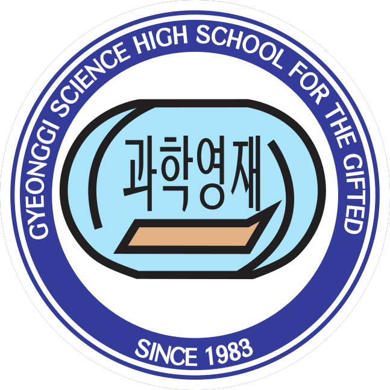
2016.03 - 2019.02 |
Experience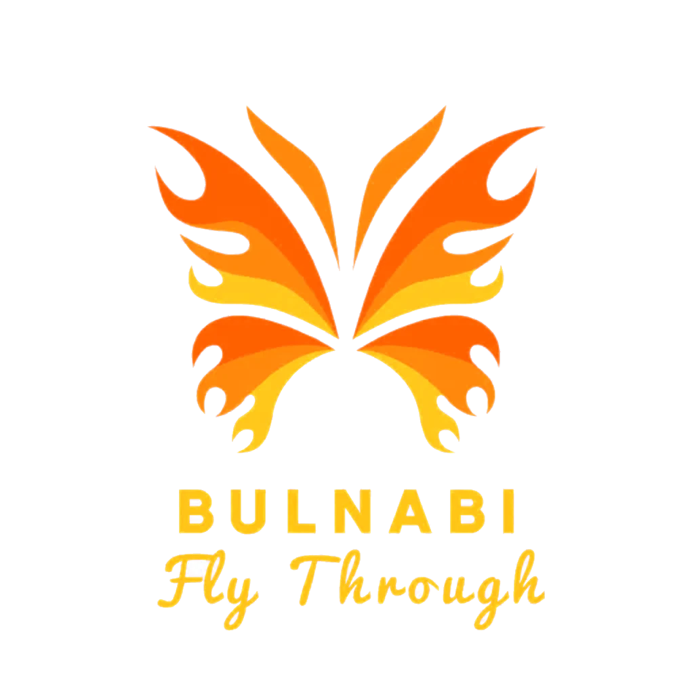
2023.01.15 - 2025.07.30 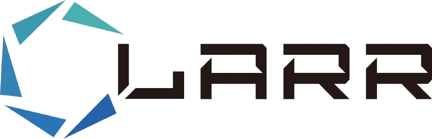
2024.09.03 - 2024.12.20 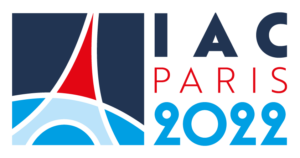
2022.09.17 - 2022.09.23
2022.09.14 - 2022.09.16 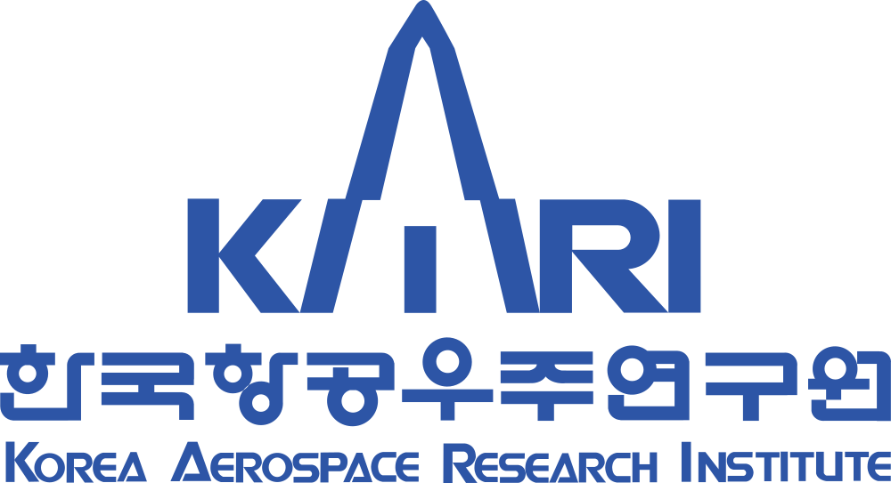
2022.01.03 - 2022.01.28 |
Projects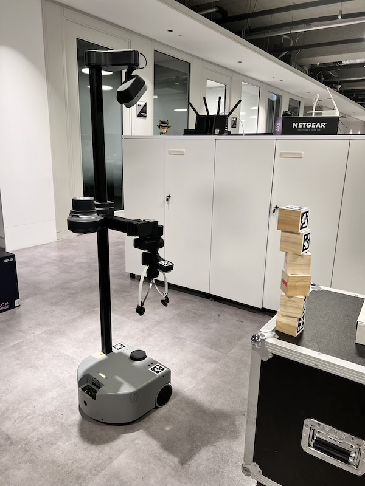 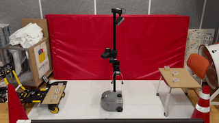
Block Stacking with Stretch 3 Built an autonomous navigation and manipulation demo on Stretch 3, stacking AprilTag blocks with a modular Scan-Nav-Grasp-Nav-Place pipeline. The system used RGB-D perception, tag servoing, and map updates to handle drift, noise, and placement alignment. code 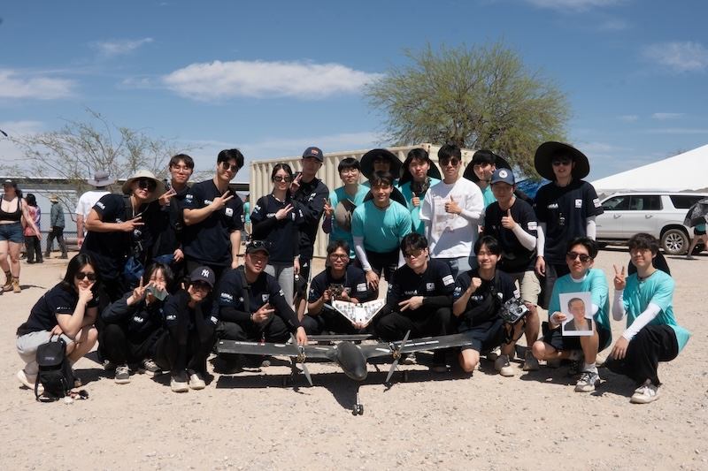 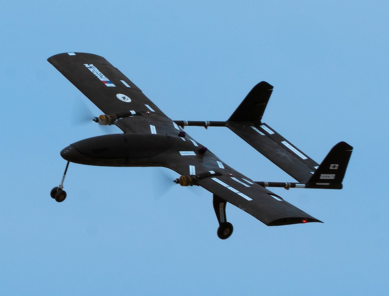
'Team KOREA' for 29th AIAA DBF Competition Participated in the 2025 AIAA Design/Build/Fly Competition in Tucson, Arizona as a member of Seoul National University Drone Team 'Bulnabi'. Developed a lightweight autonomous glider weighing about 230 g for a mission in which it was deployed from a controllable mothership. 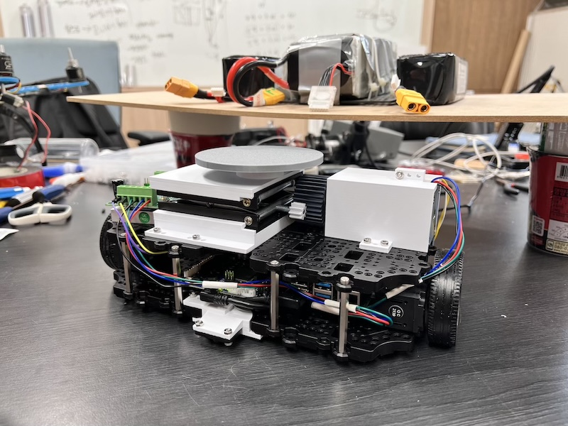 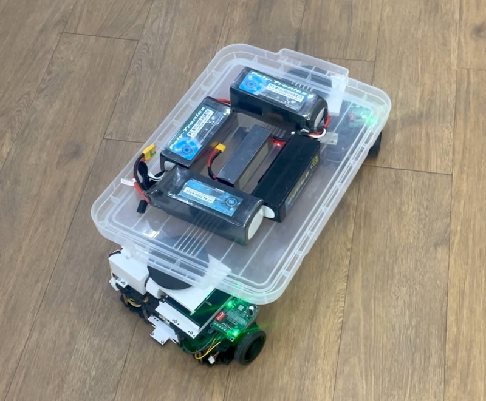
Implementation of a Multi-Agent Driving Robot System Developed a multi-agent driving robot system that can combine with an object from arbitrary positions. The system was modeled through kinematics, implemented in a ROS-based simulation, and verified on two physical dicycle robots. 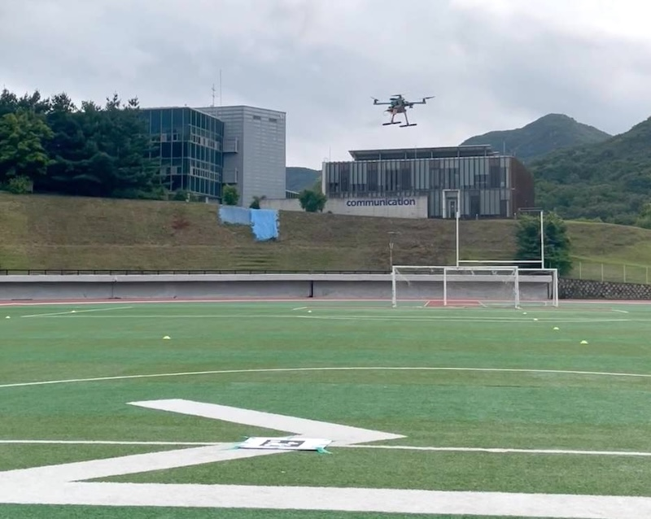
Precise Landing of an Autonomous Drone Designed a precise landing sequence for an autonomous drone as a member of Seoul National University Drone Team 'Bulnabi'. The system used GPS approach, AprilTag-based final localization, Bezier curve path planning, and PX4 control, and was verified in Gazebo and real flight tests. 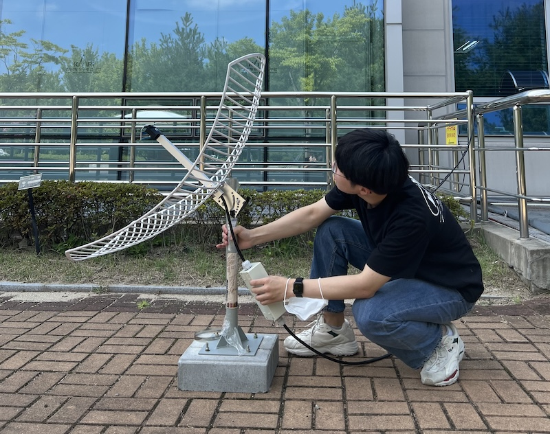 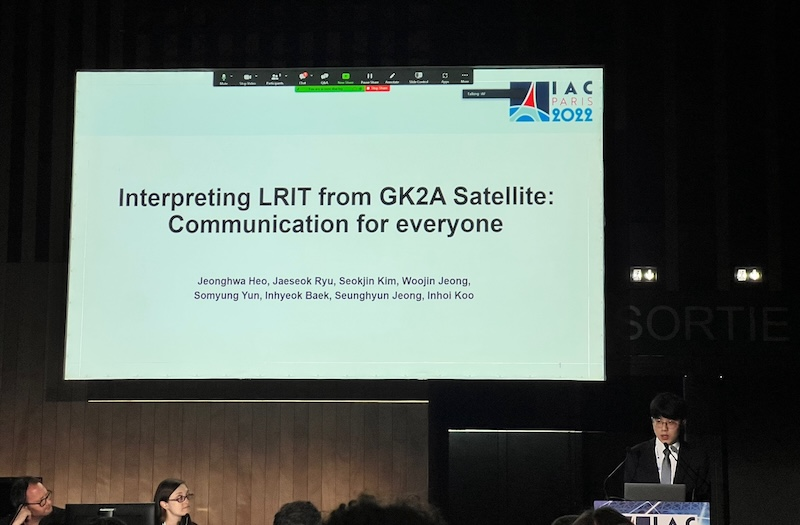
Interpreting LRIT from GK2A Satellite Received and interpreted LRIT signals from the GK2A satellite, exploring their potential as a communication tool for regions with limited internet access. Presented this work in person at the 73rd International Astronautical Congress (IAC 2022), Student Team Competition, in Paris. |
PapersMany more to come! 😁 |